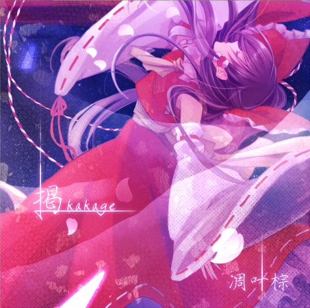

このウェブサイトはティアオイエツォンを紹介するために作られました

凋叶棕成立于2007年，是社团RD-Sounds在东方界使用的
名义，同年12月31日参加C73并发布了第一部作品《祭》（
与同人社团TimeScope合作），之后活跃至今。
凋叶棕的名称来源于东方妖妖梦2面BOSS橙的主题曲
，片假名为“ティアオイエツォン”，读音与汉语拼音“diao ye
zong”相同，大概是“凋落的叶子的棕色”的意思。但是“凋叶棕”并
非传统的中文词汇，而是比较接近日语中的“枯叶四十八色”。
凋叶棕的专辑名称基本上都是单字，每个字都具有其独特的含
义。震撼东方众心灵深处的歌词为其一大特点。曲风涉猎极其广泛
——House、Jazz、Rock、Pop、J-Trance……无不上手。因理解和考察多
少都需要一些必要的东方相关知识，所以某种意义上来
说是真正的上级向。部分作品被东方众认为是“黑化曲
”的典范，也因此备受好评。
最常客串的演唱者是めらみぽっぷ，nayuta、Φ串Φ、3L、紫咲ほたる、ランコ、紫月菜乃、中恵光城
等也曾参与。常用绘师 是はなだひょう。
上海アリス幻樂団